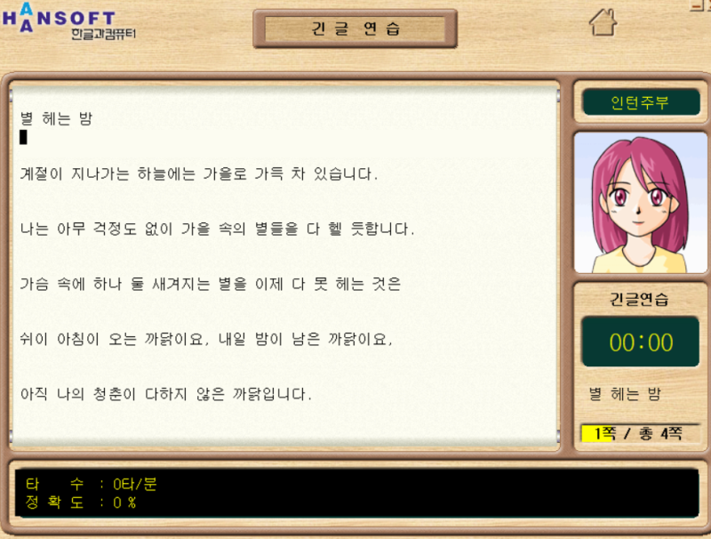
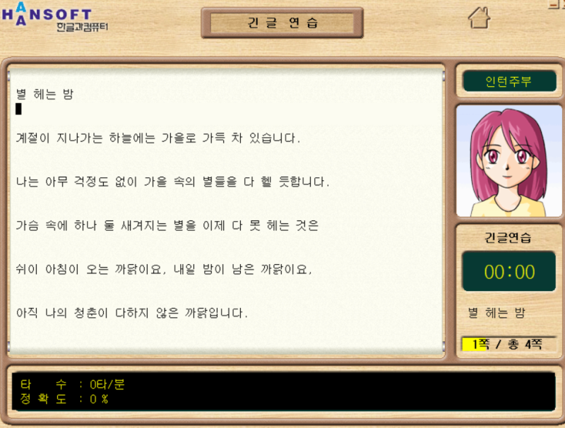
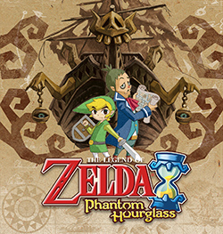

My first memory of a computer was in Seoul, where I was born and raised until the age of 8. We had a black square television, heavy and frumpy, sitting low to the ground in the middle of our living room. Back then, its height was comparable to that of me and my brother. Here, we watched Korean comedy shows, Spongebob, and other animations.
Then one day, my dad led us to one of the bedroom doors in excitement. He said, “I have something to show you”. He revealed a white computer on a desk. My brother and I sat on the ground, necks arched up towards the too-high desk to watch the first film of The Chronicles of Narnia.
In school, we had started learning to type in computer lab. The software program had a character that would frown or smile to reflect my typing progress and I felt motivated to impress my virtual teacher. On our new computer back home, my mom made me an email address (bigeyes0421 - don’t ask lol) on Hanmai, originally operated by Daum, but now merged with Kakao. My uncle and dad helped me make my first social media account on Cyworld.
Cyworld (싸이월드, Ssaiwoldeu), short for Cyber World and a play off of the Korean word cy (사이, sai), which means between or in relation to, consisted of mini bedrooms (미니홈피, minihompy) as the main feed. They allowed a wide range of customization for the bedrooms with themes and items that could be purchased using acorns (도토리, dotori), their official cyber currency. My minihompy was underwater themed with a whale spouting a heart in the center. I remember feeling so giddy when I was gifted a song to go with my bedroom, Loveable by Kim Jong Kook, that would play automatically when someone visited my room. The interface was designed to resemble a journal with the bedroom being the first default tab and other tabs including a photo album, journal entry, and more. Unlike today’s social platforms that automatically update a home feed with other people’s content to scroll incessantly, Cyworld’s main feed was yourself. If you wanted to see other people’s content, you had to visit their minihompy (like a profile) and could be done one at a time.
I was unable to recover or find my Cyworld. It holds fond memories of the early internet, true to archiving and exploration. Now there are efforts to relaunch Cyworld in 2025 and perhaps there is hope that I can recover my account from 20 years ago.
For the best viewing experience, please view on desktop <3
| |
| |
| |
| |
| _____________ |
| /=============\ |
| /_______________\ |
| | ______________ | |
| || || |
| || || |
| || || |
| || || |
| ||______________|| |
| \++______________/ |
|———————————/ “””””””””””””””\———————————|
/ / :::::::::::::::: \ \
/ / \ \
/ (——————————————————————) \
/ (______________________) \
/ \
/———————————————————————————————————————————————————\
|___________________________________________________|
| | | |
| | | |
| |————————————————————————————————————————| |
| / \ |
| / \ |
| / \ |
| / \ |
|/ \|
| |
/ \
/ \
/ \
 



\ /
\ /
\ /
\ /
\ /
\ _______________ _______________ /
\ (_______________) (_______________) /
|---| ___________ |———————————————————————————| ___________ |—|
| | { } | | { } | |
| | {___________} | | {___________} | |
| _______________ _______________ |
| [%%%%%%%%%%%%%%%] __________________ [%%%%%%%%%%%%%%%] |
| |%%%%%%%%%%%%%%%| | | |%%%%%%%%%%%%%%%| |
| | | | | | | |
| | | | | | | |
| | | | | | | |
| | | | | | | |
| | | | | | | |
| | | | | | | |
| | | | | | | |
| | | | | | | |
| | | | | | | |
| ——————————————— | | |———————————————| |
| | | |
| | | |
| |__________________| |
|
|
|
|
|
| |
|_________________________________________________________________|
|—————————————————————————————————————————————————————————————————|
| |
——————————————————————————————————————————————————————————————————-

My family moved to Southern California in the spring of 2006. We lived in Fullerton for most of my childhood and my brother and I were often home alone. Here, we didn’t have a laptop, a computer, or even access to the internet.
I still don’t really understand how TV cables work, but we used an antenna to crank and twist at just the right angle to watch our favorite shows. Our go-to shows were Malcolm in the Middle, Are You Smarter than a Fifth Grader, and if we were really lucky, our favorite, The Simpsons. I loved the opening theme song and always hoped that they would show the long version of the intro instead of skipping to the couch scene.
My brother and I spent a lot of time worldbuilding by merging Legoes and Bionicle and often included our stuffed animals as townspeople in this enmeshed world. For my brother’s birthday, he was gifted a pink Nintendo DS, the only color available at our local GameStop. My dad embellished the cover with black pointy stickers to supposedly offset the feminine look. I watched my brother finish his quest on Legend of Zelda: Phantom Hourglass multiple times and when I finally felt brave enough to try, he guided me through the dungeon as we finished the quest together. We also played Brain Age, somehow unfazed by the floating Asian head hounding us to be better at math, and Pokemon the Pearl version. I found more joy in watching my brother play Nintendo: jumping, holding breath, clenching, and cheering with him to live the stories of our virtual characters.
Our childhood was a mix of digital and physical play. It was the kind where we would gift each other Pokemon cards from Target to compare their stats on Nintendo. My brother would fold origami, including a dragon, water bombs, and treasure chests that he would hide around the park for me and my friends to find. Inside the chest would be paper cutouts of green or red gems, just like the ones you would find from Legend of Zelda.
By the time I was in fifth grade, we finally had access to the internet (yay!) and an old laptop that was entirely in Korean. Navigating the Korean interface and trying to type an essay in English was difficult. But soon, I was on Youtube, looking up and copying down lyrics to Taylor Swift’s You Belong with Me and the rest of her discography.
In 2009, as a Christmas present, My uncle gifted me a 5th generation purple ipod nano, which I still have to this day. He downloaded a selection of 100 songs for me. I did not know most of the songs, but this is where I first heard Hot n Cold by Katy Perry or Sk8er Boi by Avril Lavigne. I would say he did a pretty good job with catering music for a pre-teen girl. This was the very first time I had some kind of electronic device of my own and listening to the same 100 songs in the corner of my room or the backseat of the car made me feel like I was in my own secret hideout.
| _________________________________ |
| | I | |
| | I | |
| | I | |
| |_________________I_______________| |
| |
| ______ |
| ,-“”______ ””-.
|_______________________________ | |
/ /| |_////////////_|
/ / | ________ / //////////// \
/ ________________________/ | /……………………………………………\
/ / | | / \
/ / | / \
/ / | / \
/ / / \
|-———————| / \
|________| / \
| | |———————————————————————————————|
| | | |
| | ooooooooooooooooooooooooooooooooo
| | \
/ \
/ \
/ \
/__________ __________________________________________________________\


We moved to Yorba Linda when I started middle school. This was our home for 12 years and a place I still consider to be home. I received my very first phone in fourth grade, although it was shared between me and my brother. We would take turns keeping the phone in our backpacks and I felt so cool everytime the phone was in my possession. It was a black skinny swivel phone that I now know is called the Samsung SGH-F210 and was used for basic communications with our mom for rides and emergencies.
In middle school, I had a blue flip phone with a keypad, an LG 9250, which opened up a whole world of texting. There were a lot of RAWR xD, ROFL, and other unironically used acronyms exchanged that made my adolescent friendship so much richer. Middle school was when I also noticed a socioeconomic digital divide when I saw that some “cool kids” started bringing iphones to school. I remember a classmate named Rachel M. who had Facebook and Instagram with over 800 followers and feeling so confused and enamored. I was too young to understand what these digital relationships meant and couldn’t fathom why or how she knew over 800 people. I just thought having an iphone meant having access to all these social platforms. Perhaps the digital space and the notion of the internet was already starting to flatten in 2012.
I received my first smartphone, an iphone 6, during my sophomore year in high school. I hate to admit it, but I was invariably hooked, and my mom scolded me that my grades dropped significantly (it really wasn’t that bad; I survived). Since then, I have lived through multiple generations of iphones: SE, XR, 13 Pro (that got mugged on the bus three months after), and my current phone, 11 Pro Max (my previous boss’s old cracked phone that I traded in).
From middle school through high school, a few international students from Korea lived with my family to study in California. One of them was a girl who was 2 years older than me and the first thing she did was introduce me to Korean pop culture that I didn’t have exposure to growing up in the States. She went on Naver.com, a search engine that is basically a Korean equivalent of Google, and shared BigBang, 2NE1, Super Junior, ShiNee, Sistar, and the list goes on. I remember feeling such an intense glee of enlightenment from exposure to culture that I didn’t know even existed. She showed Webtoon, hosted on Naver, to read comics online. Then there were Korean entertainment shows or yeneung (예능) and soon, Running Man (런닝맨) and Infinite Challenge (무한도전) were in my weekly rotations. There were times we would pull all nighters to finish DVD’s or online reruns of Korean dramas – Boys over Flowers (꽃보다 남자, 2009), The Slave Hunters (추노, 2010), SungKyunKwan Scandal (성균관 스캔들, 2010). To have access to my culture abroad felt like I was finally finding out about a big secret. I was ravenous to fill the missing gaps of my Korean heritage through Korean media, online.
________________________________________________________________________________ _____
| I | |
|______________________I______________________| |
| |
| |
| |
| |
|| |
|| |
|| | |
| | |
| o……………………………………o| o……………………………………o|
| | | | * * * * * |
| | (———————————) |———————| | * * * * * |
| | (___________) | | | * * * * * |
| |_______________| | | * * * * * |
| | | | | * * * * * |
| |_______________|——————————| | * * * * * |
| | | | | * * * * * |
| | | | | * * * * * |
| |***************| | | * * * * * |
| o……………o | | |———o | * * * * * |
| | | |***************| | } | * * * * * |
|——————————————————————| | | | } | * * * * * |
| | |***************| |———o |———————————————|
| | | | | | (———————————) |
| | |***************| | | (___________) |
| | o……………………………………o| | o……………………………………o|
|______________________|______|_______________|__________|_____________________|_______________|
I entered college with a heavy Toshiba laptop in 2017. During my Media Studies class working session, my peers, as if to have made a previous agreement, all pulled out Apple laptops. I was the only one in the room without a Macbook. The guy sitting in front of me slid his finger on the keyboard from the letter “a” all the way to “l” to unlock his laptop on the flat Apple keyboard. I thought it was the coolest thing I had ever seen. I had used my Toshiba laptop with no concerns all throughout my high school years, but this was the first time I noticed laptops as “aesthetic props”.
Weighing nearly five pounds, walking around campus with my laptop was no easy feat. I started thinking about the relationship between device portability and laptop aesthetics, and how minimalist design was a proof of high craftsmanship, but also a form of abstraction and further mystification of the tools we use. Ownership of laptops was no longer enough. It was the ownership of a sleek, minimalist, aesthetic laptop, and the experience surrounding it that signified a social status – perhaps a facade of ease (in life, in habits, even in labor and productivity) that came from such ownership.
I lived alone my freshman year but during my sophomore and junior years, I shared a dormroom with a close friend. I always had such a strong image of my roommate engraved in my head, studying late at night, sitting in front of her desk, wearing wired earphones, typing away on her Thinkpad and feeling so soothed by the click clack of her keyboard.
Snapchat was a central social portal in the beginning of college, holding a deep archive of my photos, but did not return in my second year. I found myself relying heavily on Facebook for college communications. Even before I had stepped foot on campus, I was in various groups and messenger chats, talking to early admitted students about the thrill of what’s to come. Being affiliated with multiple groups – Class of 2021, AAPI, Neuroscience majors, Orientation Adventure leaders – was like collecting social assets. It was easy to know people on campus just from their profile pictures, names, and affiliations. Conversations easily sparked from “oh, I’ve seen your name in that one Facebook group before…” or “I noticed that you are so and so’s mutual!”. These digital connections held legitimate water and currency on our small campus.
————————————————————————————————————————————————————————————
/————————————————————————————————————————————————————————————\
/ \
/ |—————————————————| \
/ | |—————————————| | \
/ | | | | | | \
/ | | | | | | \
/ | | | | | | \
/ | | | | | | \
/ | | | | | | \
/ | | | | | | \
/ | | | | | | \
/ | | | | | | \
/ | |—————————————| | \
/ |—————————————————| \
/ __________________ _____________________\
/ VVVVVVVVVVVVVVVVVV/| ___________________________ |\VVVVVVVVVVVVVVVVVVVV \
/ VVVVVVVVVVVVVVVVVVV/ | / \ | \VVVVVVVVVVVVVVVVVVVV \
/VVVVVVVVVVVVVVVVVVVV/ | /______________________________\ | \VVVVVVVVVVVVVVVVVVVV \
/ / / —————-|| ||—————\ \ \
/ / / || || \ \ \
/ / / || || \ \ \
/ / | / \ \ \
/ / / \ | \ \
/ / / \ \ \
/ / / \ \ \
/ / / \ \ \
/____________________/ / \ \_____________________\
/| | / \ | |\
/ |____________________| / \ |____________________| \
/ \
/ \
/ ________________________________________ \
/ / \ \
/ / \ \
/ / \ \
/ /______________________________________________\ \
———————— ——————————————————————————————————————————————————————————————————————————————————————————————————————
I lived in Copenhagen for four months during my junior year of college. Here, I had 2 phones: my iphone and an old Samsung that an auntie lent me. My iphone was “locked” to my carrier, so I couldn’t use a Sim card with a local Danish number and needed an “unlocked” device. I asked my mom why the phone was locked when it was in my possession and I made payments to use it abroad.
Carrying around two phones felt excessive. My iphone was used to take pictures and Samsung for texts, calls, and navigation. I wasn’t used to the Samsung interface and didn’t bother to learn because I knew it was temporary. My iphone, once a complex device that necessitated my everyday needs, had assumed a new identity as a camera. Outside of taking cityscapes of my travels, I never reached for the phone to function as a phone.
I lived on the very top floor, a 4 bedroom apartment with a slanted roof, of a five story building with five other girls. The top three floors of our building consisted of our “Arts Living and Learning Community”. Abroad, I learned to use military time. I started taking film photography with my dad’s old camera. I wrote postcards. I took a watercolor painting class. I felt completely detached from the digital space and the tools surrounding it.
Every so often, when I facetimed my friends and family, I would hear updates that felt otherworldly. When asked what so and so was up to, a friend mentioned, “they are making a TikTok”, a phrase I had never heard before. TikTok was apparently this new, trendy thing that everyone was into on campus and everyone was filming videos, ironically or unironically, I couldn’t really tell. I never downloaded TikTok.
=+*#%%%%%%%%%%%%%%%%%%%%%%%%%%%%%%%%%%#*++
+#@@%-:.....:-@@@@@@@@@@@@@@@@@@---------%@@#=
+@@:...........*@%@@@@@@@@@@@@@@#-::::......-@@+
=%@-.............-==============------:::.....-@%+
+%@..................:------------------::.....@%+
+%@................:---------------------:.....@%+
*@@..............:-----------------------:.....@@+
+@@...........::-=====-------------------......@%+
+@@.........::--========----------------:.....:@%+
*@@........::-============-------------.......:@%+
+@@........::-=============-----------......::.@%+
+%@.......::-==============---------:......*+:.@%+
+%@.......:--=============---------.......**-..@%+
*@@.......:-==============-------:......-**+:..@%+
+@@.......:-============------:........****=...@%+
+%@......:--==========------:........*****+-...@%+
+%@......:-========------:.........******+=:...@@+
+@@......:-======-----:..........*******+=:....@@+
+%@......:-=-=----::...........*******++=:.....@@+
*@@.....::-----:............+********+=-:......@@+
+%@.....:::::.............**********+=-:.......@@+
+%@....................=+*********++=-:........@@+
+%@...................-++********++=-:.........@@+
+%@..................:=++********++-:..........@@+
+%@..................-=+********++=-:..........@%+
*@@.................:-=+********++=-...........@%+
*@@..................-=+********++=-...........@%+
*@@...................-+*********+=-...........@%+
*@@.....................=+********+=:..........@%+
*%@.......:=++++++++=-....=********+=:.........@%+
*@@....=*****************+=::*******+-.........@%+
*@@...***###########*********+-=*****+-........@%+
*@@..#%%%@@%%%%%%%%%%%%####*****++****+:......+@%+
*@@.#%@@@@@@@@@@@@@@@@@@%%%%###***++***-......#@%+
*@@-%@@@@@@@@@@@@@@@@@@@@@@@@%%%#**++**+.....#%@%+
*@@*%%@@@@@@@@@@@@@@@@@@@@@@@@@@%%##*==*-.+###%@%+
+@@#%%@@@@@@@@@@@@@@@@@@@@@@@@@@@@%%#*=-+**###%@%+
*@@#%%%@@@@@@@@@@@@@@@@@@@@@@@@@@@@%%#*=-+*###%@%+
*@@##%%%%%@@@@@@@@@@@@@@@@@@@@@@@@@@%%#*=:+###%@%+
*@@###%%%%%%%%%@@@@@@@@@@@@@@@@@@@@@%%%#+=:+##%@%+
*@@*##%%%%%%%%%%%%%@@@@@@@@@@@@@@@@@%%%#*+=:*#%@%+
+@@**###%%%%%%%%%%%%%%%@@@@@@@@@@@@@%%%##*+-=#%@%+
*@@***####%%%%%%%%%%%%%%%%@@@@@@@@@@%%%##*+=:*%@%+
*@@++**########%%%%%%%%%%%%%%@@@@@@%%%###*+=--%@%+
*@@+++****###########%%%%%%%%%%%%%%%%%###*+=-:#@%+
*%@+=++++*****#############%%%%%%%%%####**+=-:+@%+
*@@====+++++++*******#################***+==-:-@%+
*@@=--=======++++++++*********###******++==-:..@%+
*@@=----------=======++++++++++**+*++++===--:..@@+
*@@-:::::::::::--------=================--:::..@%+
+@@-::........::::::::::::------------:::::::..@@*
+%@+..........................................=@%+
*@@=........................................=@@*
+%@@#=:................................:-#@@%+
**%@@@@@@@@@@@@@@@@@@@@@@@@@@@@@@@@@@@@%**

WHO declared COVID-19 as a pandemic the semester after my study abroad. I finished my last three semesters of college online. My digital liberation from life abroad quickly shifted to a jarring codependence on my devices and their technologies, saturated and infatuated by the only source of connection in my small bedroom.
I texted my friends for hours. We took turns hosting monthly catch ups. I mentored high school students in breakout rooms. My partner of three years and I broke up on facetime. I cried in front of the camera. I wondered how much of my sadness seeped through the screen, if any. During video calls, I traced people’s pixelated outlines with my cursor as the extension of my hand, as if to touch, to hug, to be arm in arm.
Scrolling for hours, I wondered if gentrification was a term that could be applied to the internet. I couldn’t look away, but digital spaces didn’t look or feel the same anymore.
| || || || || |
| ||__________________|| ||_________________|| ________ |
|___________________________________________________________________/ /|_____|
/ /_______/ | /
/__________________________ || || /
//$$$$$/ / $$$$$$$$$$$$$$$ /| /
//$$$$$/ / $$$$$$$$$$$$$$$ / | _____________________________ /
//$$$$$/ / $$$$$$$$$$$$$$$ / / // ———————————————————————— // /
//$$$$$/ / $$$$$$$$$$$$$$$ / / // OMOMOMOMOMOMOMOMOMOMOMO // /
//__________________________/ / // *OMOMO* OMOMOM *OMOMO* // /
/ |——————————————————————————| / // OMOMOMOMOMOMOMOMOMOMOMO // /
/ |——————————————————————————|/ //__________________________// /
/ _________ ————————————————————————————- ___________/
/ / /| / /
/ / / | ____________ /| / /
/ |————————| /HHHHHHHHHHH/ / | / /
/ | | /H H H H H H/ / | / /
/ ____________ /HHHHHHHHHHH/ | | / /
/ / /| /H H H H H H/ | | / /
/ / /X| /HHHHHHHHHHH/ | |_/ /
/ / /X | /H H H H H H/ | / / /
/ / /X X/ /HHHHHHHHHHH/ |__/ /
/ |———————————| X/ ———————————— | |——————————/
/ | |X/ | || /
/ |___________|/ | || /
———————————————————————— ————————————————————————————————————————/


In my San Francisco bedroom, I own 3 laptops, 3 different wireless earphones, 2 film cameras, 1 paper camera, an ipad, an iphone,
a monitor, a CriCut machine, a smart watch, a Marshall’s speaker, and a Marshall’s headphone. I am unsure how I have come to possess
so many devices and gadgets in my small space. My ownership and their ubiquity often have me desensitized to the ecology of these tools –
the metal bodies and their counterparts do not tag their origins and how they have been excavated to end up in my bedroom.
Everyday, I rely on digital tools and platforms. I am a designer who creates on Adobe; a writer who narrates on Substack;
an artist who makes websites. My relationship to these tools and craft are inevitably intertwined very intimately. Yet these
tools’ systems and infrastructures remain ever-abstract. Each novel device is a wizardly nod to the future only accessed through neatly
packaged shells and their counterparts. Recently, I removed my phone case because I wanted to remember that my phone, a portal to the noise of everyday life,
is actually just a piece of metal block.
I tell myself that my digital self is just as real as the physical; that behind a pixelated archive is a person meaning making. That there are
optic fibers underground weaving through their own traffic of data to sustain this digital self.
I don't know how long I will stay in this city, in this apartment, this bedroom.
I don’t know how much of myself will be preserved online and for how long. But I have always found archival crafts
to be functions of love. I hope to remember these rooms and the person I have been with each occupancy, digital and physical,
past and present, as I walk into the future.
Ascii bedroom Memoir
This is an archive of all the bedrooms I have occupied:
From my earliest memory to present day.
In these spaces, I have shared, crafted, founded,
and lived much of my physical days as well
as my digital days. From my very first encounter
of the internet to now writing my own lines of code,
my digital presence and its relation
to self have shifted as much as I did in the physical.
Thank you for visiting my memory lane,
a deep dive of cross-continental spaces and
their corresponding memories of the internet,
digital artifacts, and me throughout the years.
`'::.
_________H ,%%&%,
/\ _ \%&&%%&%
/ \___/^\___\%&%%&&
| | [] [] |%\Y&%'
| | .-. | ||
~~@._|@@_|||_@@|~||~~~~~~~~~~~~~ welcome home
`""") )"""`
Big thank you to all who
made this project possible:
Ahmed, Khang, and the HTML
Review Team: Maxwell & Shelby
All ascii art handmade or sourced
from the Ascii Art Archive
By Eileen Ahn, 2025
Image Index
The images listed below do not belong to me.
If you are the owner and have problems with image
usage and would like it to be taken down, please
let me know. Listed in the order of appearance: